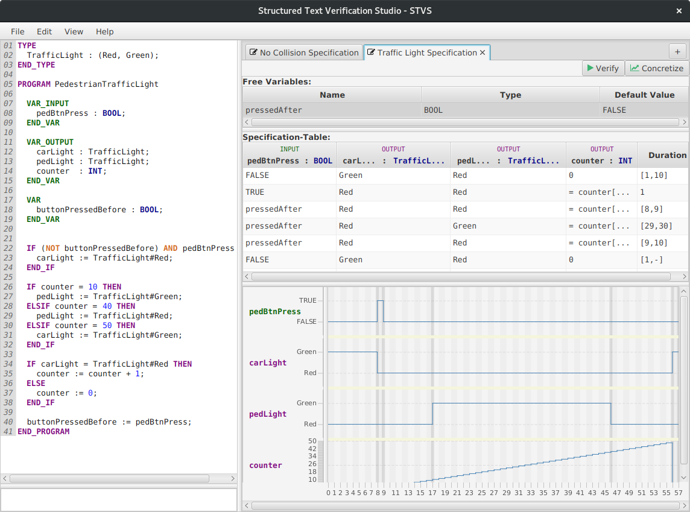

STVS – A GUI for Geteta¶
stvs provides a graphical user interface for the verification of Structured Text source code against generalized test tables.

It is a graphical frontend for the geteta backend, providing a useful and beautiful user interface, e.g., a visualization of specification violations.
stvs is open source, provided under GNU Public License v3.
Features¶
- Verification of Structured Text against one or more specified generalized test tables
- Transform a generalized test table into a concrete test table
- Source Code Editor for Structured Text
Getting Started¶
Before you can use the full feature set you need to install z3, geteta, and nuXmv.
- nuXmv is the model checker distributed under an academic license. Obtain a copy from nuxmv.fbk.eu and uncompress it.
- z3 is available as binaries on their website. On Ubuntu you can install z3 through the package manager. (sudo apt-get install z3)
- geteta translates generalized test tables into models for nuXmv and runs the verification. You can obtain the latest version from VerifAPS/geteta
Downloads¶
- Version 1.3.0 (20.07.2017)
- Important: examples not finished
- Specification supports navigation with tab and cursor keys
- New UI of the specification table
- Bug fixes in syntax highlightning
- New XML-Namespace for config, session and specification files
- New action: Resize of the specification
- Version 1.2.0-beta (14.04.2017)
- add examples menu
- UI improvments in dialogs
- default value of free variables are now arbitrary cell constraints
- Version 1.1.0
- First public release
The sources are available on `github.com/VerifAPS/stvs`__.
Documentation Material¶
- Industry-Day (20. July 2017) Presentation
Acknowledgement¶
This software was designed and implemented during the course Praxis der Softwareentwicklung by these students:
- Benjamin Alt
- Carsten Csiky
- Lukas Fritsch
- Leon Kaucher
- Philipp Krüger
Contact¶
- Mattias Ulbrich — ulbrich@kit.edu
- Alexander Weigl — weigl@kit.edu
Feel free to use the issues tracker.